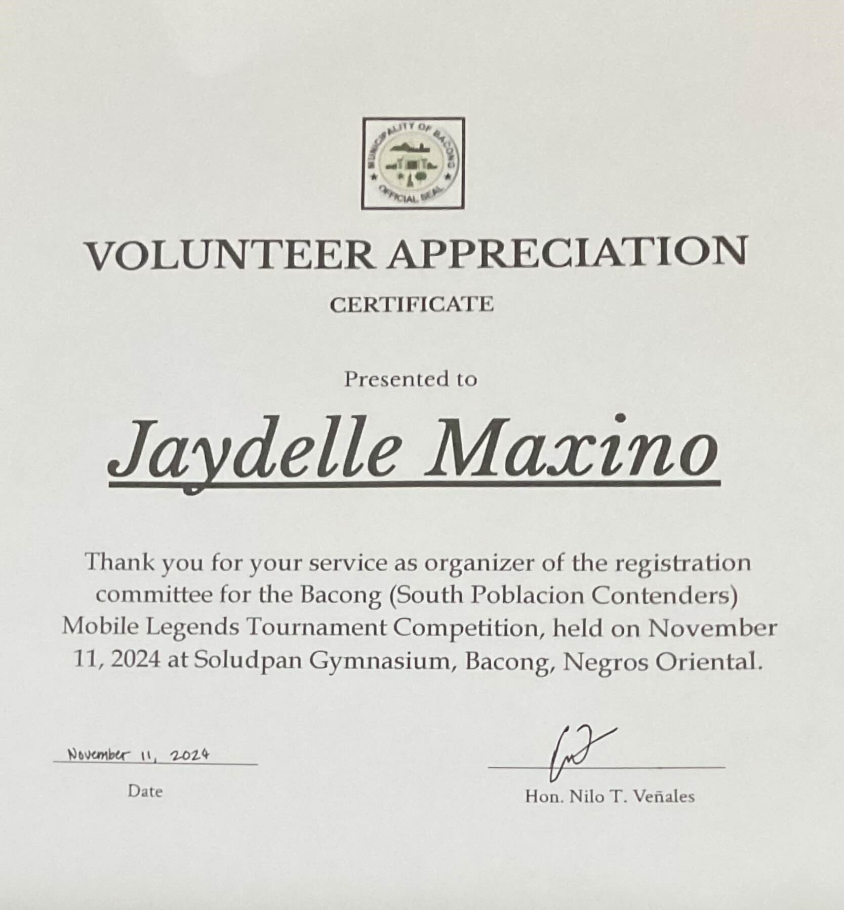

Role: Assistant Organizer (Committee Head)
The Mobile Legends Tournament 2024, hosted on October 22, 2024 (and throughout each passing
Sunday) in Bacong at the Soludpan Gymnasium as a part of the Fiesta sa Soludpan 2024 events. The event
hosted multiple teams of players from the barangay who competed in the tournament and was joined by the
community.
Being an organizer of registration, I had to map out the details concerning the information of
each
player in the tournament. I had to ensure all the necessary information was collected, including the
information of participants themselves, the team names, and more. I had to ensure that everything was
collected on time and that everything was submitted. Because of this, it was a little stressful
especially due to the other things I had to pay attention to, including school and family plans at the
time. In the end, I managed it.
I was glad to see that everything ran smoothly during the actual event and that we were able to
stay on
track and deal with sudden obstacles effectively, such as accommodating last-minute requests from
participants. However, staying organized helped immensely and with collaboration from everyone involved
(such as other volunteers, participants, and organizers), the event went swimmingly. Each team had a
wonderful time competing against one another and overall, the event was a great success.
Because of this activity, I am more aware of the details involved in such events as these and am
able to
deal with them more efficiently.

×